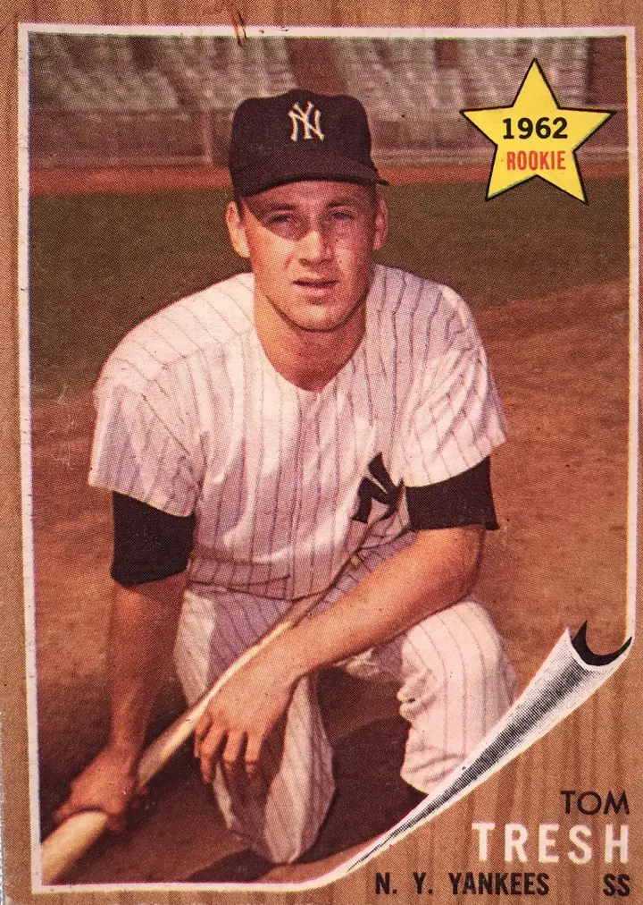

Tom Tresh
Career Highlights & Facts
(Facts are AI-generated and may require verification)
- Earned top rookie honors after a standout debut season.
- Secured a defensive accolade for excellence in the outfield.
- Followed in the footsteps of a professional catcher father.
Would you like to find out more about Tom Tresh?
Rookie of the Year
Joseph Wancho
New York Yankee rookie Tom Tresh was living a dream. He stepped into the lineup of the defending World Champions in 1962, became a key contributor, faced some adversity, and here he was starting in the World Series. Not only was he contributing, he was the favorite to be named the American League Rookie of the Year later that year.
The Yankees, facing the San Francisco Giants, were deadlocked at two wins apiece as Game Five dawned on October 10, 1962. It promised to be a close contest, as Game Two starters
Jack Sanford
of the Giants and
Ralph Terry
of the Yankees toed the rubber in a rematch of the previous contest, which was won by Sanford and the Giants by a score of 2-0.
Sanford was certainly no slouch, having won 24 games that year and at one point 16 in a row. He became locked up in a 2-2 tie with Terry, having posted 10 strikeouts in 7 1/3 innings. Consecutive singles by
Tony Kubek
and
Bobby Richardson
put two on with one away in the bottom of the eighth inning as Tresh came to bat. The rookie outfielder had already doubled off of Sanford in the fourth inning, later coming around to score on a wild pitch that knotted the game at one.
This time, Tresh went yard, blasting a three-run homer to the right field stands. The partisan crowd of 63,165 erupted at
Yankee Stadium
as the Bombers were now in front 5-2 and went on to win the game 5-3. They now held a one-game advantage as the game shifted back to the “The City by the Bay.” “It’s the hit that always was my biggest individual thrill,” said Tresh. “It was a pivotal game, and we got to go back to San Francisco ahead, not trailing, 3 games to 2.”
The happiest person in the crowd may have been Tom’s father,
Mike Tresh
, a former big-league catcher. “I was sitting with my wife and Tom’s wife in the lower stand behind home plate. It was 2-2 when the Yankees came to bat and I decided that I might break the jinx if I moved. So I walked back to the standing-room section,” said the elder Tresh. “The instant Tom hit the ball I knew it was going all the way. And the instant he hit it, I cried. I didn’t care who saw me, and when I went back to our seats, I guess there were tears in my wife’s eyes, too.”
The Giants evened the series with a win in Game Six. The rubber match between Terry and Sanford was on tap for Game Seven, as they were pitching “for all the marbles.” The Yankees were clinging to a 1-0 lead in the seventh inning, when
Willie Mays
sent a low liner to the left field corner of Candlestick Park. Tresh raced to his right, reached out and up to snare the liner with a fingertip grab. The catch proved costly to the Giants, as the next batter,
Willie McCovey
, tripled with the bases empty.
The Yankees went on to win the game 1-0, and captured the World Championship. Tom Tresh hoped that he never woke up from his merry dream.
Thomas Michael Tresh was born on September 20, 1938 in Detroit Michigan. His parents were Michael and Doris Tresh. Mike Tresh was a major league catcher with the Chicago White Sox (1938-1948) and the Cleveland Indians (1949). “I just can’t remember the time when I didn’t have a baseball in my hands,” says Tresh. “My folks have movies taken when I was 2 years old which show me throwing a ball around our apartment in Chicago.”
Another advantage to having a major-league ballplayer for a father was that Tom Tresh became familiar with the major-league experience and lifestyle. “We were with Dad when he was playing in Chicago, and I used to go to the ballpark and hang around the field with the other kids of the players. It was always great fun. I think that gave me an easy adjustment to big-league play.”
Tom was a three-sport star at Allen Park High School, earning nine letters between football, basketball, and baseball. He attended Central Michigan University, where he played shortstop his freshman year. “I knew his dad and had seen Tom play high school ball in Detroit,” recalled New York scout Pat Patterson. “He had a lot of ability. At one time there was a lot of competition for him, but then his dad said he was going to college. The others didn’t know about it when he was ready to sign. We were able to give him what he wanted.”
What the Yankees gave him was a $30,000 signing bonus. But Tom promised his parents to complete his schoolwork in order to get his degree. True to his word, he went back to Central Michigan after every season, getting his bachelor’s degree in physical education.
Tresh worked his way through the Yankee farm chain, beginning with Class D St. Petersburg of the Florida State League in 1958 through Richmond of the International League in 1961. He was named the International League’s Rookie of the Year at Richmond. The young shortstop hit .315, drove in 42 runs and led the team in hits (176) and doubles (23). His big season earned him a call up to the Yankees at the end of the year, making his big league debut as a pinch-runner for
Johnny Blanchard
on September 3, 1961.
Media and fans began comparing the switch-hitting and handsome Tresh with
Mickey Mantle
, but Tresh shrugged off the comparisons. “I always tried to be the best ballplayer I could be. I never tried to be another Mickey Mantle. I never felt any pressure like that.”
Heading into the 1962 season, the Yankees learned that they would be without the services of shortstop Tony Kubek, whose National Guard unit was called up to active duty. Tresh and
Phil Linz
competed for the open position. Linz also had a solid season the year before. He hit .349 at Amarillo of the Texas League, and was the starting shortstop. At the end of spring training, manager
Ralph Houk
chose Tresh, partly because of his value as a switch-hitter, something he learned early at the urging of his father. Linz was also kept on the varsity.
Second baseman Bobby Richardson took the rookie under his wing, and together they became a formidable combo for the Yankees. “There couldn’t have been a better influence on any rookie than the kind Richardson provided Tresh,” said Houk. “He did so many things for Tom. Without Richardson and Tresh, Lord only knows where we would have been.”
Tresh was named to the All-Star game on July 30 at
Wrigley Field
. He split shortstop duties with
Luis Aparicio
. In one of his two at-bats, Tresh doubled and knocked in a run.
The Yankees got a surprise when Kubek was discharged earlier than expected, re-joining the team on August 6. Houk was now faced with the decision of what to do with Tresh.
Hector Lopez
Jack Reed
, and
Joe Pepitone
had all roamed left field for a portion of the season. But it was Tresh who added a defensive flair and offensive punch more than the other players. He received quite an endorsement from his boyhood idol and center field companion, Mickey Mantle. “I don’t think anybody has to worry about Tom,” said Mantle. “I’ve played alongside a lot of leftfielders and Tresh rates as the best one.”
The Yankees topped the junior circuit, besting second-place Minnesota by five games. Tresh hit .286 on the year, smacking 20 home runs and driving in 93 runs. He was named American League Rookie of the Year by both the
Sporting News
and the Baseball Writers Association of America (BWAA).
The Yankees dispatched the Giants for their 20th world championship in franchise history. It would be the last one for 15 years. Tresh led the team in batting average (.321), runs (5) and hits (9) for the series.
Tresh showed his versatility again the following season, when Mantle was injured on June 5, 1963, in Baltimore. In the sixth inning Mantle gave chase of a
Brooks Robinson
shot, but his left foot came down in stride, into the outfield’s chain link fence. His foot was bent back. Subsequently it was broken and he was loss to the team for two months.
Tresh stepped in, playing center field while Mantle recovered, committing only four errors and fielding the position at .981. On offense, Tresh belted 25 homers and drove in 71 runs.
Although they won the pennant with a comfortable 10-game cushion over Chicago, the Yankees were anything but the Bronx Bombers in the World Series against the Los Angeles Dodgers.
Sandy Koufax
mowed them down in Game One, striking out 15, and dominated again in Game Four with eight Ks to complete a four-game sweep. The Yankees could only muster four runs for the Series.
Houk moved upstairs to the front office and
Yogi Berra
was named manager. The Yankees were getting older, with
Elston Howard
Whitey Ford
, and Mantle all getting “a little long in the tooth.” They showed their guile when they were in third place, 1 ½ games out of first place on September 15, but won 11 in a row to overtake Baltimore and Chicago, with a four-game lead. Tresh hit a three-run home run off of Cleveland’s
Jack Kralick
on October 2 that led to a 5-3 Yankee win, helping to salt away the pennant. Even so, Tresh wasn’t happy with his .245 batting average, saying, “I felt that after playing in New York for three years, it was my time to produce”
at the levels of Mantle, Maris, and Howard.
The Yankees tangled with the Cardinals in the Fall Classic, eventually falling to St. Louis in seven hard-fought games. Redbird ace
Bob Gibson
won two of the contests. Tresh hit two home runs, touching Gibson for one in Game Five that tied the ballgame in the bottom of the ninth inning. “A fastball down the middle,” said Gibson, “and that’s what happens to fastballs down the middle.”
St. Louis manager
Johnny Keane
joined the Yankees in the off-season, replacing Berra as the skipper. Tresh again was shifted between center and left field. He even started 17 games in right field. “Right now, Tresh is an outfielder and I would say he’s done his job well at each of the three positions he’s played in our outfield this season,”
said Keane. The manager knew what he was talking about as Tresh won a Gold Glove for his fine work.
But he also provided some juice at the plate, batting .279, clubbing 26 home runs, and driving in 74 runs. He posted career highs in doubles (29) and triples (6). On June 6, the Yankees pasted the Chisox by a score of 12-0. Tresh, showing off his switch-hitting ability, smacked three home runs in his first three at bats: the first one was right-handed, the next two were from the left side of the dish. Keane enjoyed having Tresh to lead off the order, as he could heat up the offense quickly by smashing a home run or simply getting on base. The problem was, when Mantle was out, Tresh had to bat cleanup. The additional problem was that Mantle needed a lot of rest.
But despite Tresh’s heroics, 1965 was the first season since 1959 that there would not be a flag, pennant or otherwise, fluttering above Yankee Stadium at season’s end. The Bronx Bombers were sinking into a spiral of disaster.
More change was coming Tresh’ way in 1966. Kubek was force to retire at the conclusion of the 1965 season because of a neck injury.
Ruben Amaro
was imported to replaced Kubek, but in the season’s fifth game, Amaro drifted back to catch a dying swan off of
Curt Blefary
, and Tresh tried a diving catch, and slammed into Amaro, wrecking the shortstop’s knee. Amaro was out for the season. The Yankees tried rookie
Bobby Murcer
at short, and in his first game, Murcer made three errors. He was sent to Toledo. Shortly thereafter, the Yankees fired Keane, the first time the Yankees had fired a manager in mid-season in more than 50 years.
Ralph Houk returned from the front office to manage, and he moved third baseman
Clete Boyer
over to shortstop and Tom was sent to third base, giving sophomore
Roy White
some playing time in the outfield. “Tommy is a fine all-around ballplayer,” said Houk. “You remember he was named rookie-of-the-year in our league a few years ago and he made it at shortstop. So bringing him back into the infield is not the same thing as bringing any outfielder.”
Tresh was more philosophical, saying, “I win Rookie of the Year as a shortstop and they move me to the outfield. Then I win a Gold Glove Award there in 1965 and they move me to third. I couldn’t figure out what position I was supposed to prove I could play.”
Tresh belted a career high in homers, getting both of his 26 and 27 dingers in both ends of a doubleheader against Washington on September 15. But it didn’t help, as the Yankees finished dead last with a record of 70-89. Tresh himself had little to celebrate, with a .233 average and only 68 RBIs.
In the second game of 1967 spring training, Tresh, back in left field, cut off a ball hit by Baltimore’s
Mark Belanger
, in the corner. His momentum carried him toward the line, and he gunned a throw across his body. As the ball left his hand, Tresh felt a popping sound and felt his right knee give away. Seconds later, he was rolling on the ground in agony.
The injury was diagnosed as a strain, but two weeks later, it was ruled as something more serious: loose cartilage. The Yankees told Tresh to play on the injury and see what happened.
“I know I run the bases differently because I avoid sharp turns and swing wider,” said Tresh at the time. “That cuts down on my speed on the bases and also on the number of chances I will take. In the outfield, I used to always run straight at the ball, but now I more or less circle towards it so there won’t be any sharp turns.”
Years later, Tresh discussed the injury and the team’s order that he play through it. “It was a bad decision, but it wasn’t mine to make. It would have been much wiser had they taken me in for surgery right away, before I had a chance to really destroy the knee. Because over the course of the season, my knee gave out five more times.”
Tresh had surgery at the end of the year to remove outside cartilage from his right knee, spending his 30th birthday in Lenox Hill Hospital. The surgery was successful, and Tresh was told he would be ready for spring training the following year.
Even so, Tresh wasn’t so sure. That off-season, he returned to Central Michigan University, to continue his pursuit of a bachelor’s degree in physical education. He had been working on it on and off since the late 1950s. “It took me only four terms to graduate,” he said. “Eisenhower, Kennedy, Johnson, and Nixon.”
Tresh was increasingly gloomy. “I can’t say that I handled it all that well when I had my knee problems and my statistics went down. That was very hard on me, to know that at one time I was probably as good as most of the guys in the game,”
Tresh said. Indeed, in 1966, the Red Sox had contemplated trading their star left fielder,
Carl Yastrzemski
, to the Yankees for Tresh, even up. Over their first five seasons, Tresh had out-homered and outscored Yaz.
When
Gene Michael
struggled to hit the next season, Tresh once again was called to plug a hole at short. Although, Tresh was not hitting the cover off the ball either, he believed that a change back to his old position might give him a lift offensively. “I think moving to short will help my hitting,” Tresh said. “Some of the recent years I have had here were low for outfielder, but would have been good seasons for a shortstop. I will think like a shortstop when I’m hitting now, which means I’ll just be trying to poke hits and forget the long ball.”
But it didn’t work out as planned, Tresh hitting a career low .195 for the season, his knee practically destroyed. He tied his career high in strikeouts (97). Mantle retired at the end of the season, and an era had ended. They finished 20 games behind pennant-winner Detroit. “My numbers fell to where they dragged down my overall statistics to those of an average player,”
Tresh recalled. When the Yankee Stadium scoreboard flashed his batting average, Tresh averted his eyes and tried to tune out the fans’ boos.
Tresh started 1969 in New York, but the situation was hopeless. “I was a physical wreck. I’d gotten hurt. I’d gotten phlebitis. And I had a strep throat.”
He requested a trade to Detroit to be closer to his family and was dealt to his hometown Tigers on June 14 for outfielder
Ron Woods
. Tresh’s right knee was still giving him trouble, and he had more surgery to repair cartilage damage on the other side of the knee. Despite, the pain, Tresh smacked 13 homers for Detroit in half a season.
He went to spring training in 1970, but Tiger management insisted that the eight-year veteran report to the minors to work on rehabilitating his knee. Tresh had had enough. “I said, ‘Give me my release, I’m finished.’” He had planned to retire after 10 seasons, as a concession to his wife. “She didn’t like the game of baseball, basically. So it didn’t make any sense to continue. To leave baseball at 32 was not easy. But I had to get out. I was not happy.”
Tresh was released just before the season began. He hit .245 for his career, with 153 home runs and 530 RBI.
Tresh remained in Michigan with his wife Cherie and their four children; Michael, Michelle, Heidi, and Kami. He started off owning and operating a Kentucky Fried Chicken franchise. “I did everything there – cooked, cleaned, hired people, opened, closed the place, put in a long workday every day. But I turned it around, and we made some money when we sold the franchise,”
he said.
After that, he joined the faculty at his alma mater, Central Michigan University, working as an administrator in the business school’s alumni and placement offices. He also served as assistant baseball coach for 14 years at CMU. “It was one of those jobs where I could help the kids and do a little recruiting, but it left me with time to travel to card shows, come back for baseball events, and enjoy some free time. There’s no question that playing with the Yankees gave me identification in later life that really helped me in a lot of ways,”
he said.
Tresh also participated in Yankees fantasy camps, noting at one camp banquet that a ballplayer who even makes the big leagues even for a day has to be a great baseball player considering the competition along the way. “I might have had a better career if I didn’t hurt my knee,” he said, “But I have no regrets. It was just short of 10 years, and that is pretty good. Sometimes I think I should just sign my name, ‘Tom Tresh, New York Yankee.’ That’s my identification.”
Tom Tresh passed away on October 14, 2008, as the result of a heart attack. He was survived by his four children, his second wife Sandra, two stepchildren, and 14 grandchildren.
Author’s note
I would like to thank SABR member Cecilia Tan with her help on this bio.
http://newyork.yankees.mlb.com/index.jsp?c_id=nyy&tcid=mm_cle_sitelist
http://www.baseball-reference.com/
http://www.retrosheet.org/
http://www.baseballlibrary.com/homepage/
Tom Tresh, interview conducted by Cecilia Tan, March 2002.
Clavin, Tom and Peavy, Danny
, Roger Maris: Baseball’s Reluctant Hero
, Simon & Schuster, 2010, 254
New York Times
, October 11, 1962
Sports Illustrated
, April 2, 1962
Allen, Maury,
Yankees Where Have You Gone?
Sports Publishing, 2004, page 230
Sporting News
, May 6, 1967
Allen, Maury, Ibid., page 230
Sporting News
, September 22, 1962
Sporting News
, October 6, 1962
Bashe, Philip,
Dog Days
, Random House, 1994, page 57
Halberstam, David
, October 1964
, Villard Books, 1994, page 340
Sporting News
, July 31, 1965
Sporting News
, May 28, 1965
Bashe, Philip, Ibid., page 67
Sporting News
, August 26, 1967
Bashe, Philip, Ibid., page 94
Bashe, Philip, Ibid., page 95
Bashe, Philip, Ibid., page 96
Sporting News
, June 8, 1968
Bashe, Philip
, Ibid.,
page 96
Bashe, Philip, Ibid., page 96
Bashe, Philip, Ibid., page 96
Allen, Maury, Ibid., page 233
Allen, Maury, Ibid., page 233
Allen, Maury, Ibid., page 233
Full Name
Thomas Michael Tresh
Born
September 20, 1938 at Detroit, MI (USA)
Died
October 14, 2008 at Venice, FL (USA)
Rookie of the Year
Career Totals
| WAR | AB | H | HR | BA | R | RBI | SB | OBP | SLG | OPS | OPS+ |
|---|---|---|---|---|---|---|---|---|---|---|---|
| 22.0 | 4251 | 1041 | 153 | .245 | 595 | 530 | 45 | .335 | .411 | .746 | 113 |
Statistics via Baseball-Reference.com
The Original Clue